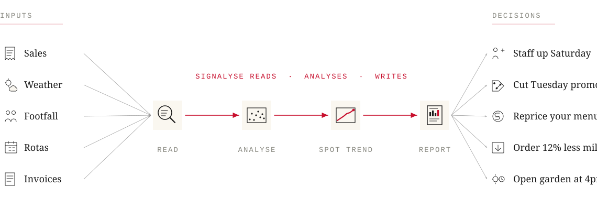
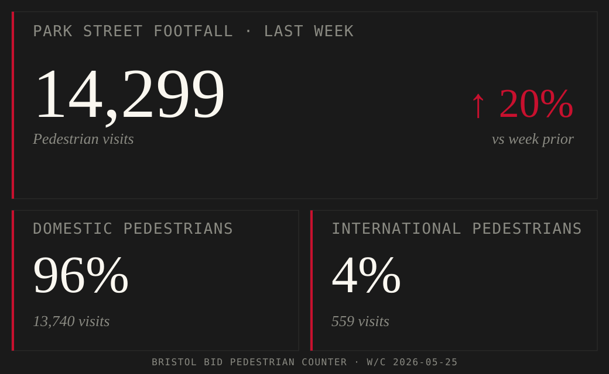
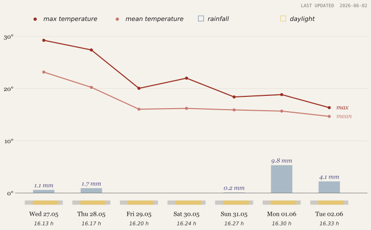

Read the signals your business is already sending.
Signalyse turns the data your café, pub, or restaurant already produces — sales, footfall, weather, supplier costs — into a quiet operating advantage. Independent, Bristol-based, built around your business.
You know your business from the inside — every regular, every quiet Tuesday, every supplier who’s let you down. What you don’t have is six unbroken hours to sit with the data underneath it. Sales, footfall, weather, rotas, invoices. The patterns are in there. They just need someone to read them.

◆ LIVE DATA
Bristol, last week.
Last week's signals... the signals impacting your business.

Bristol BID pedestrian counter · Park Street

Open-Meteo weather data · Park Street
§ 02 · WHERE TO START
Three ways in.
Most start with the written report to find hidden trends. A standing relationship monitors trends quarterly. The forecast helps you plan for the future.
Tier 1
The Read
↑ hover to explore
A one-off written report. Your data read, analysed, and written up — patterns found, what they mean, and concrete moves in priority order.
Tier 2
The Standing View
↑ hover to explore
Quarterly written brief, always-on live dashboard, and ongoing analyst access. A standing relationship that tracks your business across the year.
Tier 3
The Forecast
↑ hover to explore
A weekly PDF for the days ahead, built using external signals and tailored to your business using our AI expertise. Optimise your business decisions.